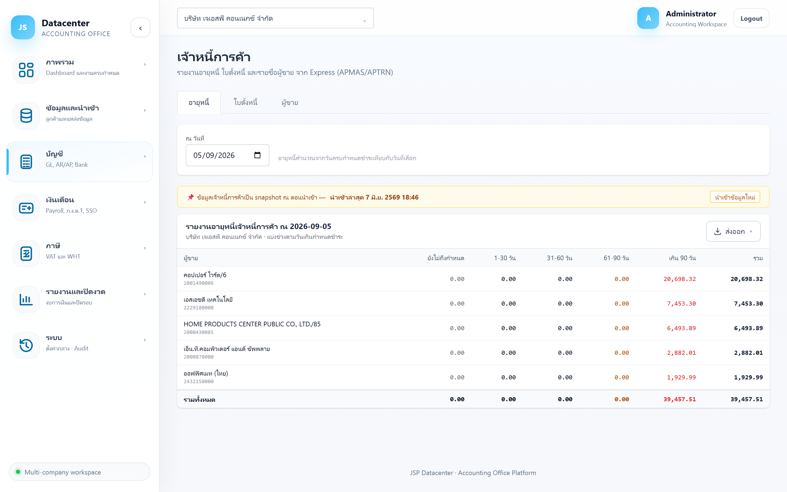
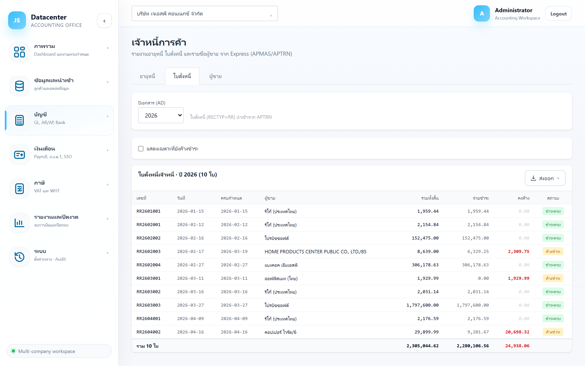

เจ้าหนี้การค้า
ติดตามยอดค้างจ่ายให้ผู้ขาย — รายงานอายุหนี้, ใบตั้งหนี้รายใบพร้อมสถานะการจ่าย และทะเบียนผู้ขาย ดึงจาก Express (APMAS / APTRN)
หน้านี้ทำงานเหมือน ลูกหนี้การค้า ทุกอย่าง แค่สลับด้าน — “ลูกค้า” เป็น “ผู้ขาย”, “ใบแจ้งหนี้” เป็น “ใบตั้งหนี้”, “รับชำระ” เป็น “จ่ายชำระ”
1. การเข้าใช้งาน
- เลือกบริษัทลูกค้า ที่แถบด้านบน
- เปิดเมนู บัญชี → เจ้าหนี้
- เลือกแท็บ: อายุหนี้ · ใบตั้งหนี้ · ผู้ขาย
2. แท็บ “อายุหนี้”
ยอดค้างจ่ายของผู้ขายแต่ละราย แบ่งตามช่วงวันเกินกำหนดชำระ

| ช่วง | ความหมาย |
|---|---|
| ยังไม่ถึงกำหนด | ใบที่ยังไม่ถึงวันครบกำหนดจ่าย — ยอดปกติที่ควรมี |
| 1-30 / 31-60 วัน | เลยกำหนดจ่ายมาแล้ว |
| 61-90 วัน | แสดงเป็น สีเหลือง |
| เกิน 90 วัน | แสดงเป็น สีแดง — เสี่ยงกระทบเครดิตกับผู้ขาย |
| รวม | ยอดค้างจ่ายทั้งหมดของผู้ขายรายนั้น |
ฝั่งลูกหนี้ดูเพื่อ ตามเก็บเงิน · ฝั่งเจ้าหนี้ดูเพื่อ วางแผนจ่าย — ตั้ง “ณ วันที่” เป็นสิ้นเดือนหน้า จะเห็นว่าเดือนนั้นต้องเตรียมเงินจ่ายเท่าไร
3. แท็บ “ใบตั้งหนี้”

| คอลัมน์ | ความหมาย |
|---|---|
| เลขที่ / วันที่ | เลขที่ใบตั้งหนี้และวันที่เอกสาร |
| ครบกำหนด | วันครบกำหนดจ่าย |
| ผู้ขาย | ชื่อผู้ขาย |
| รวมทั้งสิ้น | ยอดสุทธิของใบ |
| จ่ายชำระ | ยอดที่จ่ายไปแล้ว |
| คงค้าง | ยอดที่ยังต้องจ่าย |
| สถานะ | ชำระครบ หรือ ค้างชำระ |
ติ๊ก แสดงเฉพาะที่ยังค้างชำระ เพื่อดูเฉพาะใบที่ต้องจ่าย และเลือก ปีเอกสาร ได้จากปีที่มีข้อมูลจริง
ใบตั้งหนี้จากการรับของ (Express: APTRN ที่ RECTYP=RR) — การจ่ายเงินสะท้อนในช่อง “จ่ายชำระ”
4. แท็บ “ผู้ขาย”
ทะเบียนผู้ขายจาก Express (APMAS) พร้อมยอดค้างจ่ายรวมรายราย — คอลัมน์เหมือนฝั่งลูกค้า (รหัส · ชื่อผู้ขาย · เลขผู้เสียภาษี · เครดิตเทอม · อีเมล · ยอดค้าง) และติ๊กแสดงผู้ขายที่ปิดใช้งานได้
เลขผู้เสียภาษีของผู้ขายในแท็บนี้ ใช้ตรวจกับใบกำกับภาษีซื้อใน ภ.พ.30 และหนังสือรับรองหัก ณ ที่จ่ายได้
5. ปัญหาที่พบบ่อย
| อาการ | สาเหตุและวิธีแก้ |
|---|---|
| ไม่มียอดเจ้าหนี้คงค้าง | ไม่มีใบค้างจ่าย ณ วันที่เลือก หรือยังไม่ได้นำเข้าข้อมูลเจ้าหนี้จาก Express |
| ยอดค้างไม่ลดทั้งที่จ่ายแล้ว | ข้อมูลเป็น snapshot ณ ตอนนำเข้า — นำเข้าใหม่ที่เมนูนำเข้าข้อมูล |
| ยอดรวมไม่ตรงกับบัญชีเจ้าหนี้ใน GL | ตรวจที่ บัญชีแยกประเภท ว่ามีรายการปรับปรุงอื่นในบัญชีเจ้าหนี้หรือไม่ |
| ต้องดูว่าค้างจ่ายปีปิดงบ จ่ายจริงปีถัดไปหรือยัง | ใช้เมนู ตรวจจ่ายหลังปิดงบ ในกลุ่มรายงานและปิดงวดแทน |
สินทรัพย์หมุนเวียนอีกตัวที่ต้องกระทบยอดตอนปิดงบ — สินค้าคงคลัง →